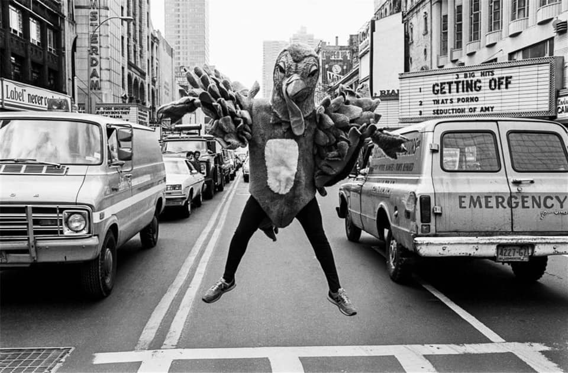
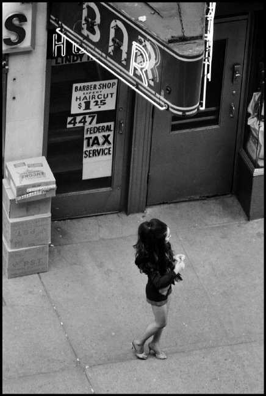
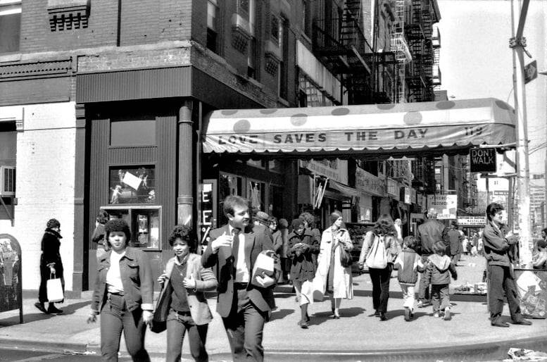
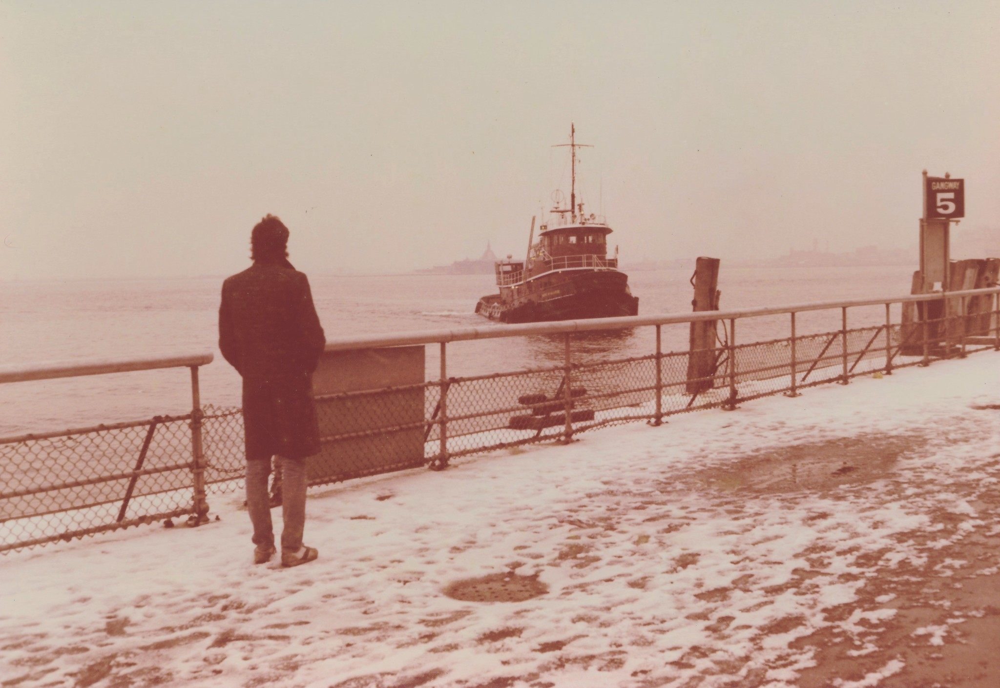
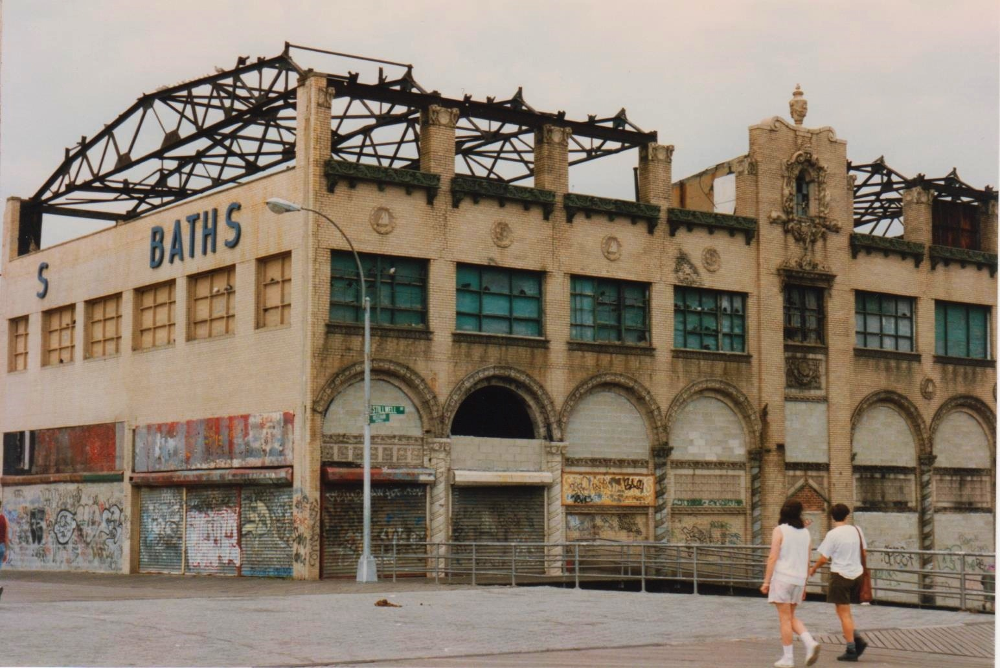
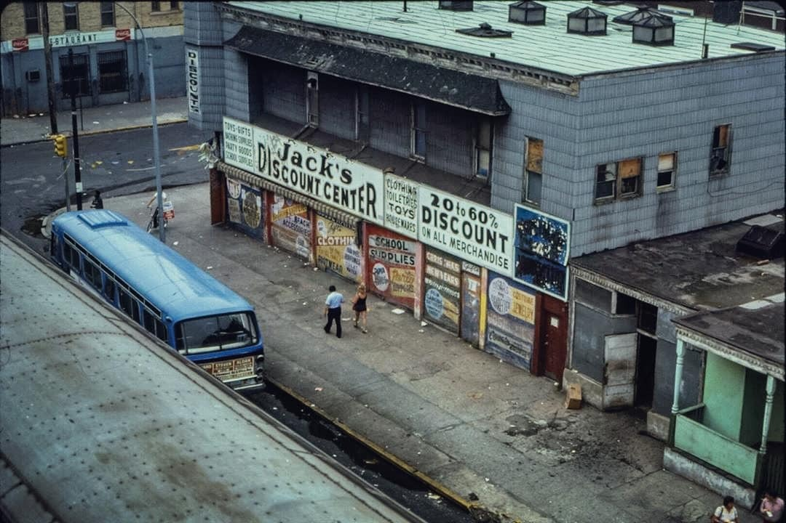
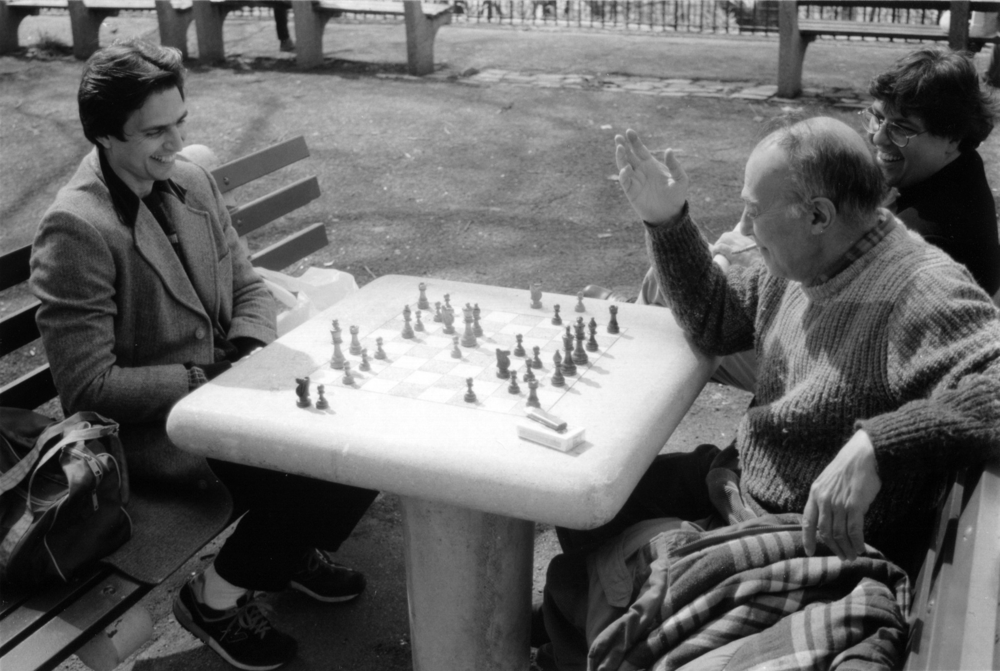
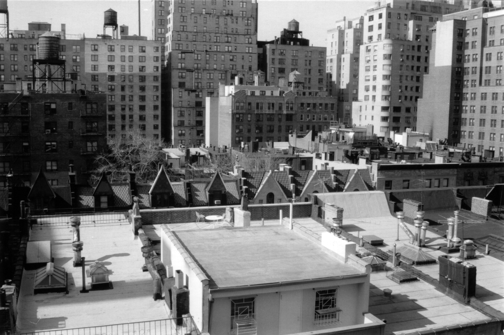
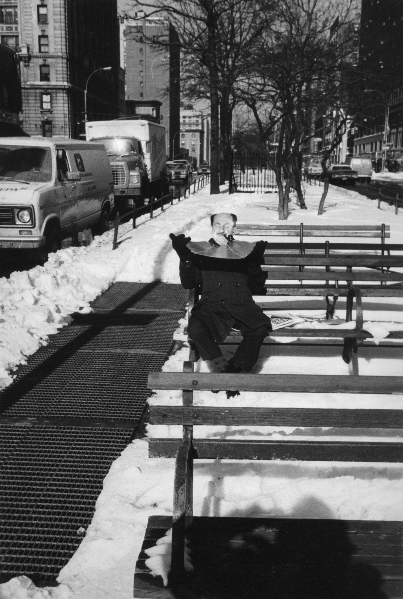

Macy’s Thanksgiving Day Parade, ca. 1989
Photo by Jeremy Meyers
Is that a carrot in your mouth, or are you just happy to see me?
Macy’s Thanksgiving Day Parade, ca. 1989
Photo by Jeremy Meyers
Is that a carrot in your mouth, or are you just happy to see me?

A turkey living dangerously in Times Square

Burt Glinn: New York City, 1971

Coney Island boardwalk, 1990
Central Park West rooftop, 1978

Rooftop life, 1975

Garbage strike on the Upper West Side, 1975

Love Saves The Day. A lesson for modern times.
2nd Ave and 7th St, 1980

Battery Park, 1980

Coney Island bathhouse, 1990

Delancey near Orchard, 1980
On the bus in midtown, 1979

Coney Island, 1978

Skating near the Plaza Hotel, 1980

Chess in Riverside Park, circa 1990

Looking from 89th Street to the south, circa 1990

Catching some rays on Broadway